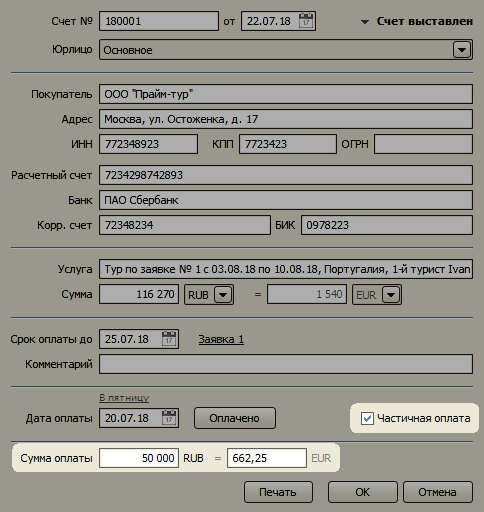
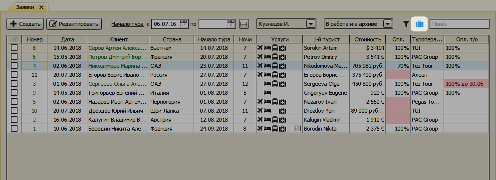
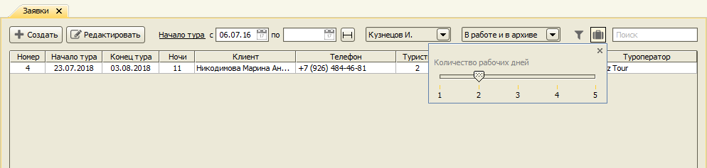
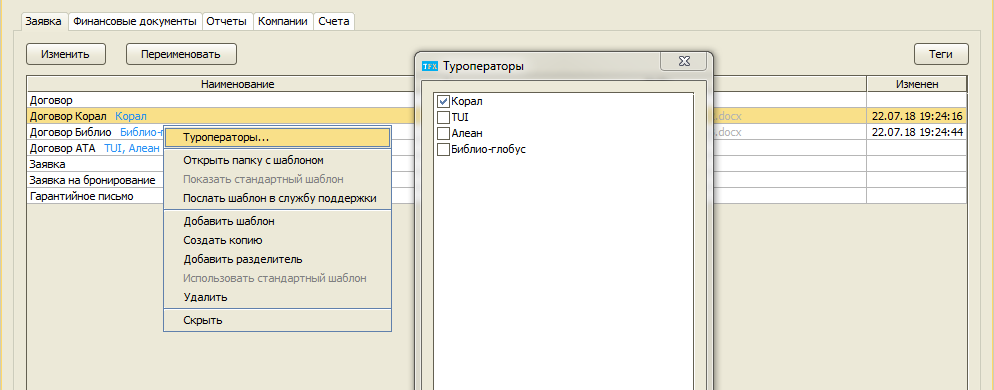
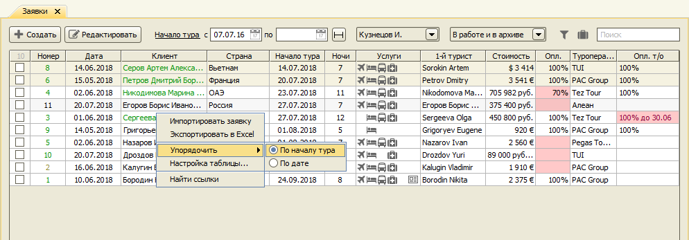

Изменения в версии 2.9.7
- Частичная оплата счетов
- Заявки с ближайшими вылетами
- Привязка шаблонов заявки к определенным туроператорам
- Импорт банковской выписки в формате iFOBS
- Поиск заявки по номеру подтверждения
- Настройка упорядочивания заявок
Частичная оплата счетов
Появилась возможность регистрировать частичные оплаты по счетам.

Заявки с ближайшими вылетами
В журнал заявок добавлена кнопка при нажатии на которую показывается список заявок с вылетами в ближайшие дни. Кнопка меняет цвет на синий , когда имеются туры с ближайшими вылетами.

Количество (будних) дней, которые считаются ближайшими, можно настроить, нажав на иконке правой кнопкой мыши.

Привязка шаблонов заявки к определенным туроператорам
В шаблонах заявки появилась опция привязки к определенным туроператорам. Такие шаблоны показываются в заявке в меню Печать только если в заявке указан один из этих туроператоров.

Импорт банковской выписки в формате iFOBS
Добавлена поддержка импорта банковской выписки в формате iFOBS, используемом в украинских банках. Файл с выпиской должен иметь расширение .dat.
Поиск заявки по номеру подтверждения
В журнале заявок теперь можно добавить колонку с номером подтверждения. Также доступен поиск заявки по номеру подтверждения туроператора. Номер должен быть введен полностью.
Настройка упорядочивания заявок
При открытии заявки по-умолчанию упорядочиваются по началу тура. Теперь можно установить упорядочивание по дате создания заявки.

Остались вопросы? Напишите нам на e-mail